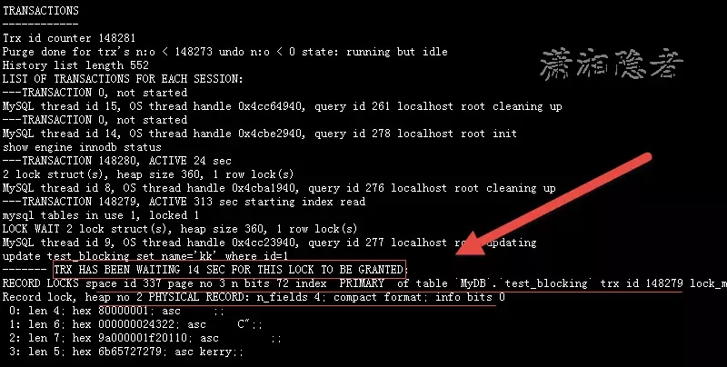
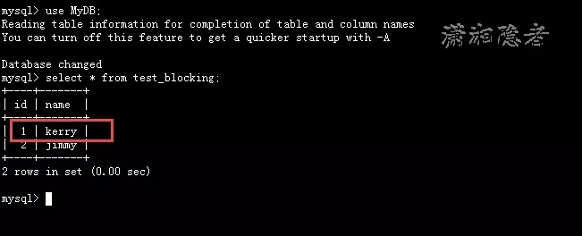
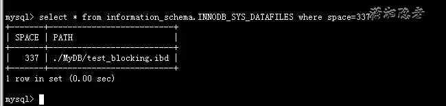
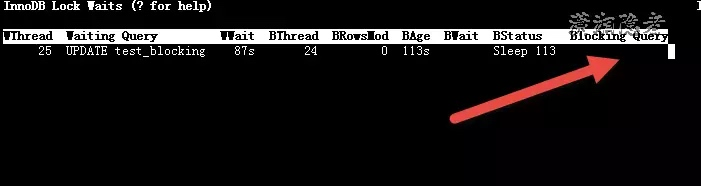
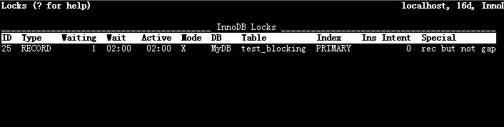
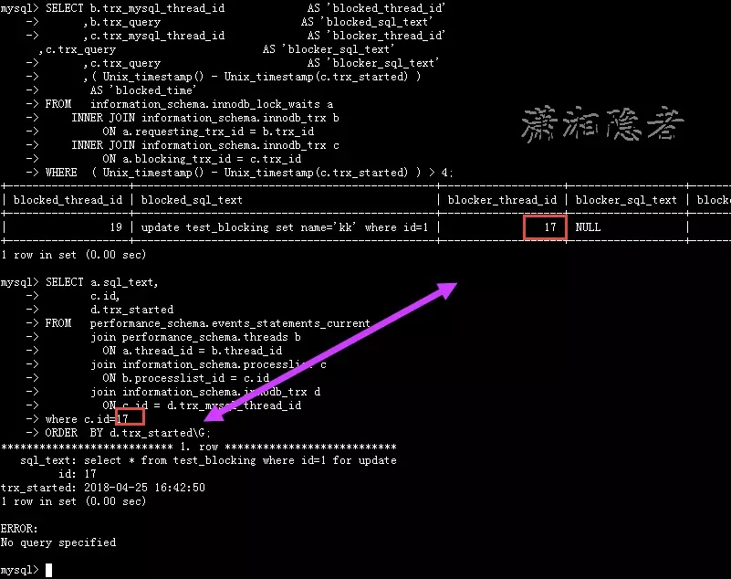
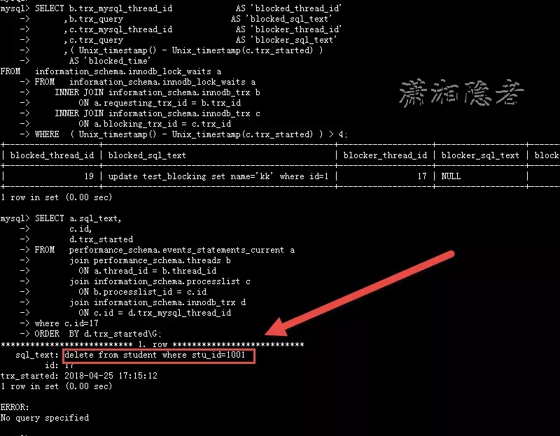

在MySQL数据库中出现了阻塞问题，如何快速查找定位问题根源？在实验开始前，我们先梳理一下有什么工具或命令查看MySQL的阻塞，另外，我们也要一一对比其优劣，因为有些命令可能在实际环境下可能并不适用。
- show engine innodb status
- Innotop工具
- INNODB_TRX 等系统表
下面我们理论联系实际，通过实验来测试总结一下这个问题。首先构造测试环境，数据库测试环境为（ 5.7.21 MySQL Community Server 和5.6.20-enterprise-commercial，这两个测试环境我都测试验证过）
> mysql> use MyDB;
Reading table information for completion of table and column names
You can turn off this feature to get a quicker startup with -A
Database changed
mysql> create table test_blocking(id int primary key, name varchar(12));
Query OK, 0 rows affected (0.05 sec)
mysql> insert into test_blocking
-> select 1, 'kerry' from dual;
Query OK, 1 row affected (0.00 sec)
Records: 1 Duplicates: 0 Warnings: 0
mysql> insert into test_blocking
-> select 2, 'jimmy' from dual;
Query OK, 1 row affected (0.00 sec)
Records: 1 Duplicates: 0 Warnings: 0
mysql> insert into test_blocking
-> select 3, 'kkk' from dual;
Query OK, 1 row affected (0.00 sec)
Records: 1 Duplicates: 0 Warnings: 0
准备好测试环境数据后，那么我们接下来开始实验，为了实验效果，我们先将参数innodb_lock_wait_timeout设置为100。
> mysql> show variables like 'innodb_lock_wait_timeout';
+--------------------------+-------+
| Variable_name | Value |
+--------------------------+-------+
| innodb_lock_wait_timeout | 50 |
+--------------------------+-------+
1 row in set (0.00 sec)
mysql> set global innodb_lock_wait_timeout=100 ;
Query OK, 0 rows affected (0.00 sec)
mysql> select connection_id() from dual;
+-----------------+
| connection_id() |
+-----------------+
| 8 |
+-----------------+
1 row in set (0.00 sec)
mysql> set session autocommit=0;
Query OK, 0 rows affected (0.00 sec)
mysql> select * from test_blocking where id=1 for update;
+----+-------+
| id | name |
+----+-------+
| 1 | kerry |
+----+-------+
1 row in set (0.00 sec)
然后在第二个连接会话中执行更新脚本，构造被阻塞的案例
> mysql> select connection_id() from dual;
+-----------------+
| connection_id() |
+-----------------+
| 9 |
+-----------------+
1 row in set (0.00 sec)
mysql> update test_blocking set name='kk' where id=1;
在第三个连接会话执行下面命令，查看TRANSACTIONS相关信息：
> mysql> show engine innodb statusG;

使用show engine innodb status命令后，可以查看其输出的TRANSACTIONS部分信息，如上截图所示，找到类似TRX HAS BEEN WATING …部分的信息，
通过那部分信息，我们可以看到update test_blocking set name=’kk’ where id=1这个SQL语句被阻塞了14秒，一直在等待获取X Lock。
> TRANSACTIONS
------------
Trx id counter 148281 #下一个事务ID
Purge done for trx's n:o < 148273 undo n:o < 0 state: running but idle
History list length 552
LIST OF TRANSACTIONS FOR EACH SESSION:
---TRANSACTION 0, not started
MySQL thread id 15, OS thread handle 0x4cc64940, query id 261 localhost root cleaning up
---TRANSACTION 0, not started
MySQL thread id 14, OS thread handle 0x4cbe2940, query id 278 localhost root init
show engine innodb status
---TRANSACTION 148280, ACTIVE 24 sec
2 lock struct(s), heap size 360, 1 row lock(s)
MySQL thread id 8, OS thread handle 0x4cba1940, query id 276 localhost root cleaning up
---TRANSACTION 148279, ACTIVE 313 sec starting index read
mysql tables in use 1, locked 1
LOCK WAIT 2 lock struct(s), heap size 360, 1 row lock(s)
MySQL thread id 9, OS thread handle 0x4cc23940, query id 277 localhost root updating #线程ID为9， 操作系统线程句柄为0x4cc23940， 查询ID为277，账号为root的UPDATE操作
update test_blocking set name='kk' where id=1 #具体SQL语句
------- TRX HAS BEEN WAITING 14 SEC FOR THIS LOCK TO BE GRANTED: #TRX等待授予锁已经有14秒了
RECORD LOCKS space id 337 page no 3 n bits 72 index `PRIMARY` of table `MyDB`.`test_blocking` trx id 148279 lock_mode X locks rec but not gap waiting
在space id=337（test_blocking表的表空间），page no=3的页上，表test_blocking上的主键索引在等待X锁
Record lock, heap no 2 PHYSICAL RECORD: n_fields 4; compact format; info bits 0
0: len 4; hex 80000001; asc ;; #第一个字段是主键，制度按长为4，值为1
1: len 6; hex 000000024322; asc C";; #该字段为6个字节的事务id，这个id表示最近一次被更新的事务id（对应十进制为148258）
2: len 7; hex 9a000001f20110; asc ;; #该字段为7个字节的回滚指针，用于mvcc
3: len 5; hex 6b65727279; asc kerry;; #该字段表示的是此记录的第二个字段，长度为5，值为kerry（如果表有多个字段，那么此处后面还有记录）

> mysql> select * from information_schema.INNODB_SYS_DATAFILES where space=337;
+-------+--------------------------+
| SPACE | PATH |
+-------+--------------------------+
| 337 | ./MyDB/test_blocking.ibd |
+-------+--------------------------+
1 row in set (0.00 sec)
mysql>

但是这种方式也有一些弊端，例如生产环境很复杂，尤其是有大量事务的情况下。诸多信息根本无法清晰判断知道谁阻塞了谁；其次一点也不直观； 另外，这个也无法定位blocker 的SQL语句。这种方式只能作为辅助分析用途，通过查看取锁的详细信息，帮助进一步诊断问题。
*2: Innotop工具*
如下所示，Innotop工具很多情况下也不能定位到阻塞的语句（Blocking Query）， 也仅仅能获取一些锁相关信息


*3：通过查询information_schema数据库下与事务相关的几个系统表*
还是构造之前的测试案例，在第一个会话中使用SELECT FOR UPDATE锁定其中一行记录
> mysql> use MyDB;
Database changed
mysql> set session autocommit=0;
Query OK, 0 rows affected (0.00 sec)
mysql> select connection_id() from dual;
+-----------------+
| connection_id() |
+-----------------+
| 17 |
+-----------------+
1 row in set (0.00 sec)
mysql> select * from test_blocking where id=1 for update;
+----+-------+
| id | name |
+----+-------+
| 1 | kerry |
+----+-------+
1 row in set (0.00 sec)
mysql>
然后在第二个连接会话中执行更新脚本，构造被阻塞的案例
> mysql> use MyDB;
Database changed
mysql> select connection_id() from dual;
+-----------------+
| connection_id() |
+-----------------+
| 19 |
+-----------------+
1 row in set (0.00 sec)
mysql> update test_blocking set name='kk' where id=1;
此时阻我们在第三个连接会话查找谁被阻塞了
> SELECT b.trx_mysql_thread_id AS 'blocked_thread_id'
,b.trx_query AS 'blocked_sql_text'
,c.trx_mysql_thread_id AS 'blocker_thread_id'
,c.trx_query AS 'blocker_sql_text'
,( Unix_timestamp() - Unix_timestamp(c.trx_started) )
AS 'blocked_time'
FROM information_schema.innodb_lock_waits a
INNER JOIN information_schema.innodb_trx b
ON a.requesting_trx_id = b.trx_id
INNER JOIN information_schema.innodb_trx c
ON a.blocking_trx_id = c.trx_id
WHERE ( Unix_timestamp() - Unix_timestamp(c.trx_started) ) > 4;
SELECT a.sql_text,
c.id,
d.trx_started
FROM performance_schema.events_statements_current a
join performance_schema.threads b
ON a.thread_id = b.thread_id
join information_schema.processlist c
ON b.processlist_id = c.id
join information_schema.innodb_trx d
ON c.id = d.trx_mysql_thread_id
where c.id=17
ORDER BY d.trx_startedG;
如下截图所示，第一个SQL语句能够查到线程19 被线程 17阻塞了， 被阻塞的SQL语句为“update test_blocking set name=’kk’ where id=1;”, 能够查到被阻塞了多长时间，但是无法查到源头SQL语句。此时就需要第二个SQL语句登场，找到源头语句。

但是不要太天真的认为第二个SQL语句能够获取所有场景下的阻塞源头SQL语句，实际业务场景，会话可能在执行一个存储过程或复杂的业务，有可能它执行完阻塞源头SQL后，继续在执行其它SQL语句，此时，你抓取的是这个连接会话最后执行的SQL语句，如下所示，我简单构造了一个例子。就能构造这样的一个场景。这个我曾经写过一篇博客“_为什么数据库有时候不能定位阻塞（Blocker）源头的SQL语句_”，分析SQL Server和ORACLE 定位查找阻塞源头SQL语句，现在看来真是大道同源，殊途同归。
> mysql> select * from test_blocking where id=1 for update;
+----+-------+
| id | name |
+----+-------+
| 1 | kerry |
+----+-------+
1 row in set (0.00 sec)
mysql> delete from student where stu_id=1001;
Query OK, 1 row affected (0.00 sec)
mysql>

总结： 最简单、方便的还是上面两个SQL查询定位blocker的SQL语句，但是需要注意：有时候它也查不到真正阻塞的源头SQL语句。所以还需结合应用程序代码与上下文环境进行整体分析、判断！